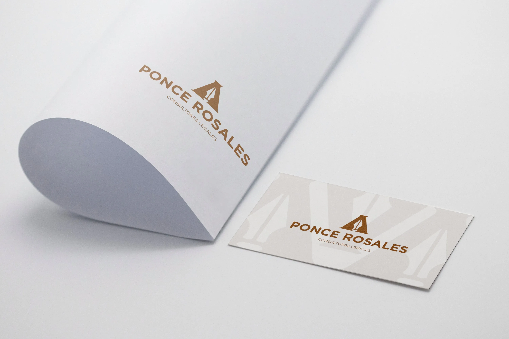

Ponce Rosales
Identidad para despacho legal
El proyecto en dos l�neas
Ponce Rosales es un despacho jur�dico en Jalisco especializado en derecho empresarial y laboral. Quer�an una imagen profesional que transmitiera experiencia y autoridad, pero sin verse como todos los dem�s abogados.
El problema concreto
El sector legal en M�xico est� plagado de marcas anticuadas: balanzas de la justicia, colores navales y tipograf�as serif pesadas. Ponce Rosales quer�a diferenciarse. El reto fue construir una identidad que proyectara autoridad sin parecer otro despacho m�s del mont�n.
Proceso y decisiones clave
Empec� con una auditor�a de los 10 despachos m�s reconocidos en Jalisco. El patr�n era claro: todos usaban azul marino, serif antiguo y s�mbolos de justicia. Mi estrategia fue apuntar al espacio opuesto.
- Eleg� una paleta oscura y premium (casi negra con un acento dorado) que transmite exclusividad sin exagerar.
- La tipograf�a combina una serif moderna (elegante, sin ser anticuada) con una sans-serif limpia para textos secundarios.
- Descartamos el uso de figuras legales ic�nicas porque reforzaban exactamente el estereotipo que quer�amos evitar.
Galer�a




Impacto y resultados
El cliente report� que sus clientes potenciales comenzaron a percibirlo como una firma "de otro nivel" desde el primer contacto. La nueva identidad les permiti� elevar sus tarifas y atraer un perfil de cliente m�s cercano al segmento empresarial que buscaban.
Lo que aprend�
En sectores muy tradicionales, el mayor reto no es el dise�o en s�, sino convencer al cliente de que diferenciarse no es arriesgado, es necesario. Este proyecto me ense�� a respaldar cada decisi�n visual con argumentos estrat�gicos concretos.